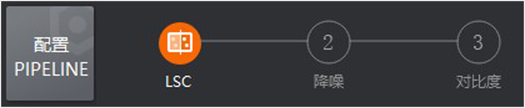
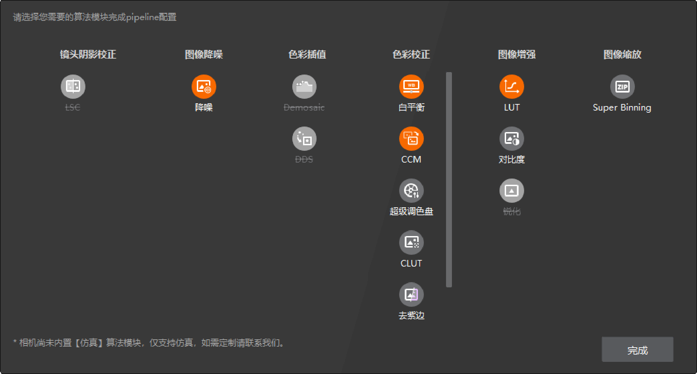

可通过本地导入、相机导入及手动设置的方法配置Pipeline。
配置Pipeline前需确保已连接相机或已导入本地图像。
Pipeline配置后将按照固定顺序进行排序，色彩校正模块的顺序为。
单击工具控制条的，选择本地的xml配置文件，单击确定即可导入。此时页面将显示导入Pipeline中包含的算法模块，如下图所示。

图 1 配置完成连接相机时，将自动清空Pipeline，需单击工具控制条下方的请点击配置Pipeline进行重新配置。
单击工具控制条下方的请点击配置Pipeline，在弹出界面中通过单击选择需要的算法模块使其变为橙色，对已选中的算法模块再次单击可取消选择，如下图所示。完成Pipeline配置后单击完成，此时页面将显示配置的Pipeline中包含的算法模块。

图 2 Pipeline配置界面配置Pipeline页面中置灰的模块不可选择。
连接相机状态下，当前相机不支持的算法模块会标注“仿真”。
若需修改当前已配置的Pipeline，可单击配置PIPELINE，再次打开配置页面进行修改。